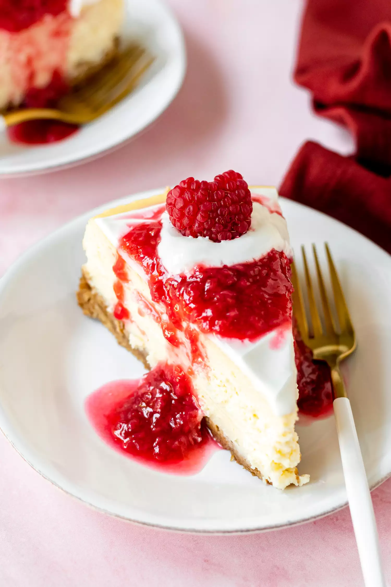
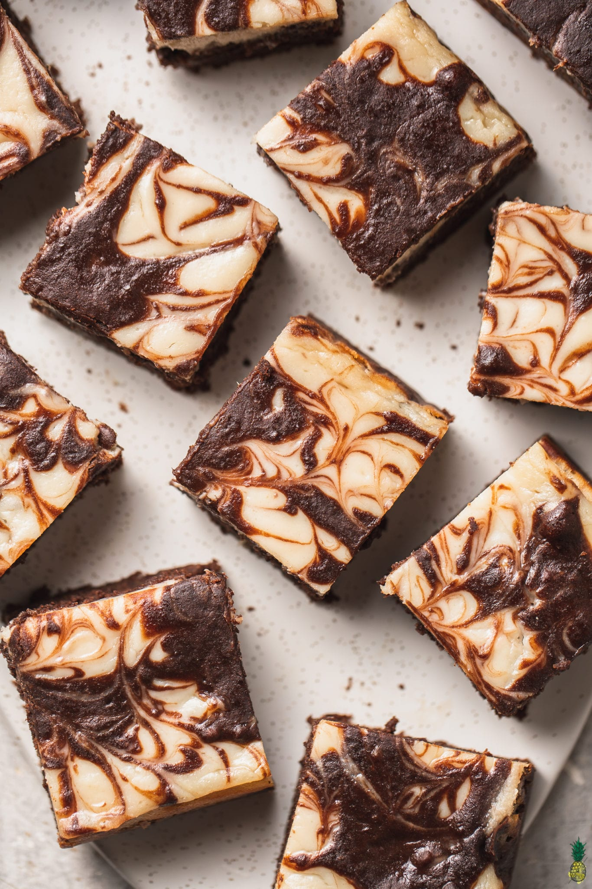
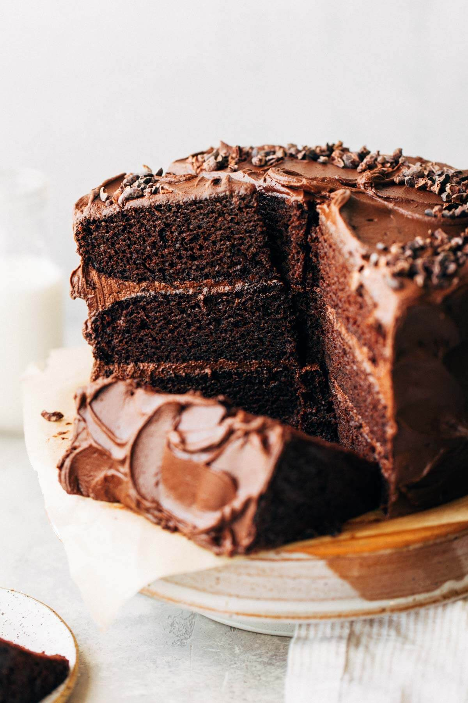
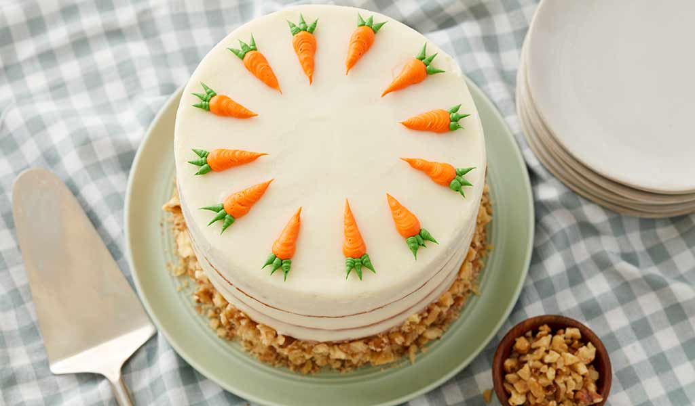
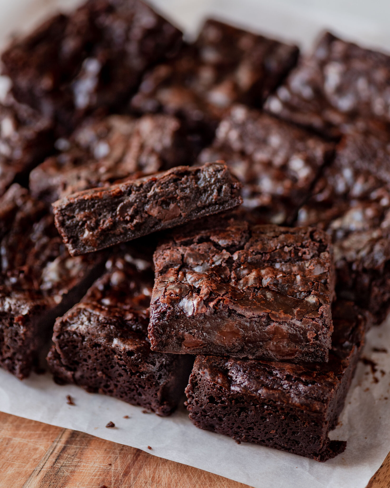
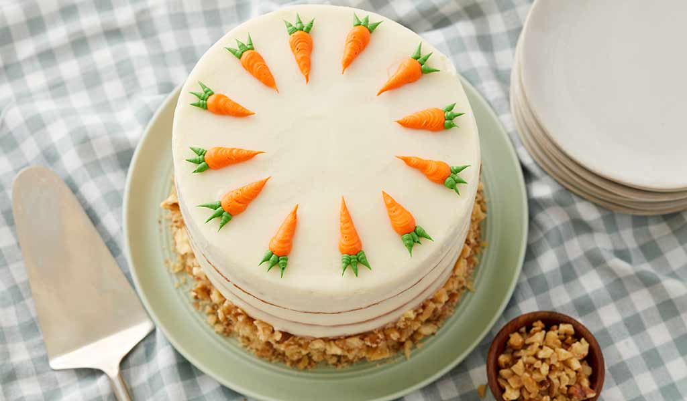
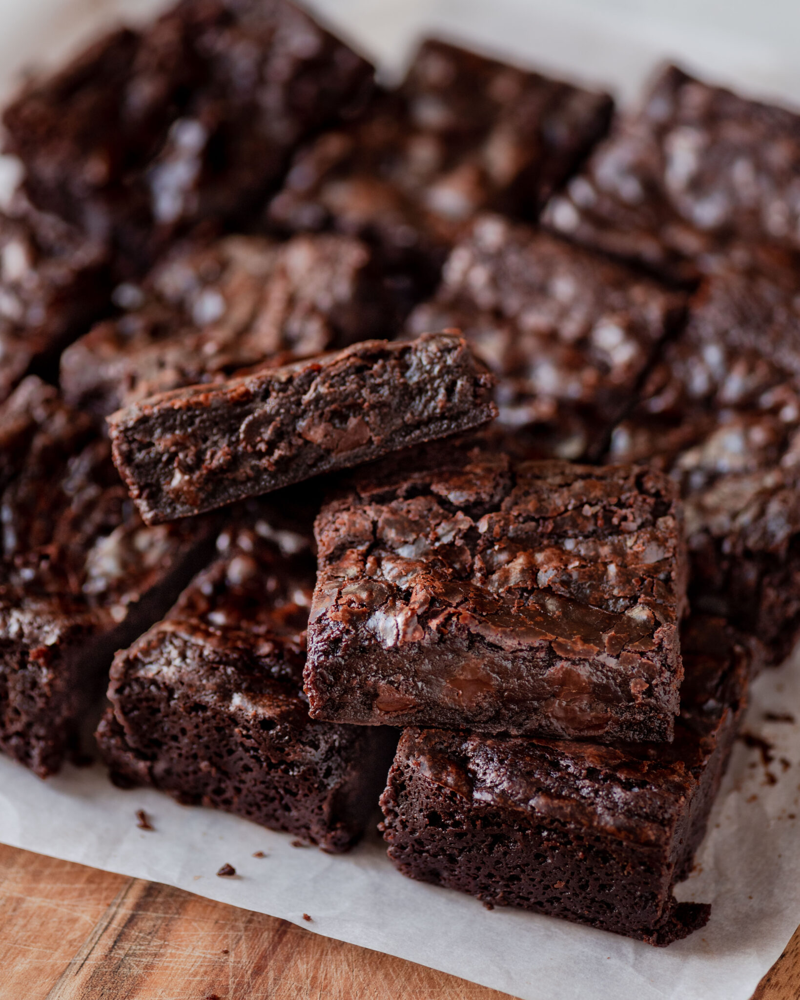
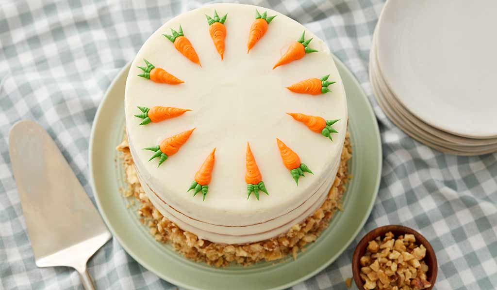
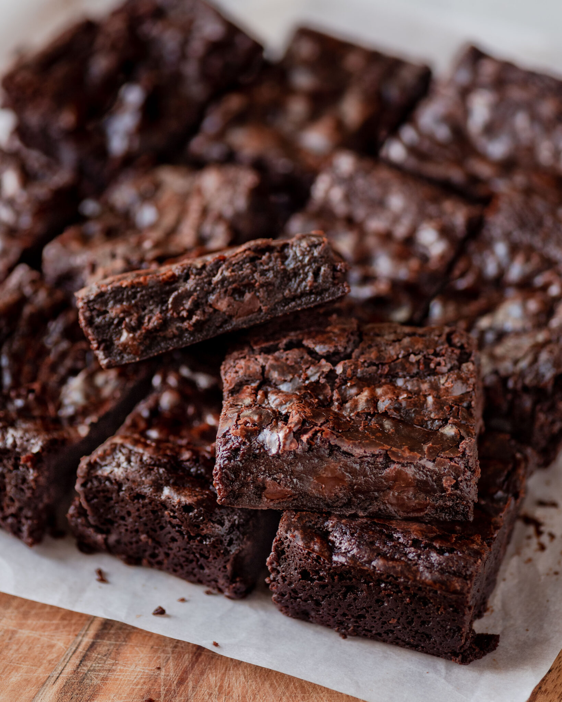

Here are some ideas for arguably the best part of a full meal, dessert. Most desserts are vegetarian by nature, which makes it easy to satisfy your sweet tooth. Some of these options are vegan as well, or can be made to be vegan. These are some of my favorite desserts. I have had most of these in a vegan form and it did not detract from its magic.




 






